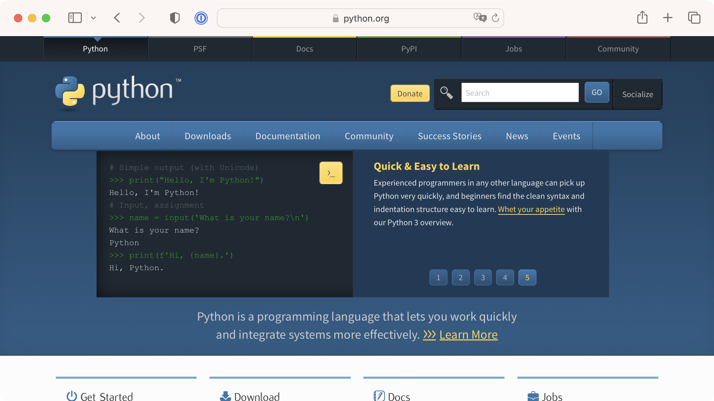
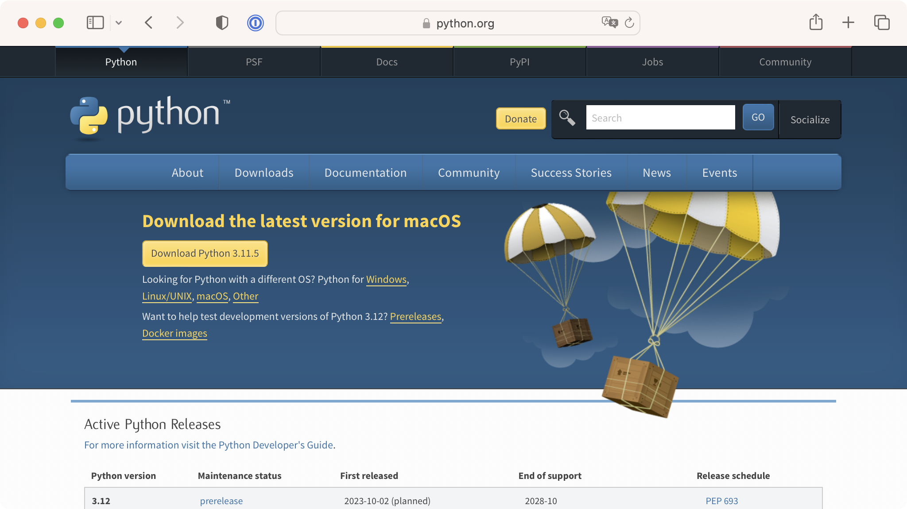
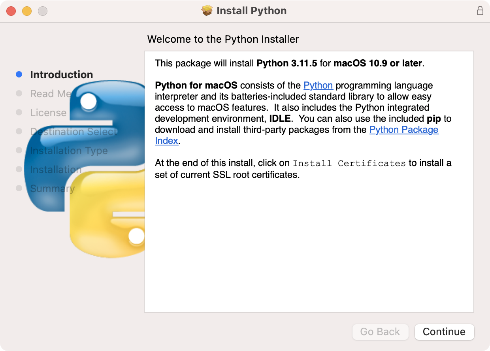
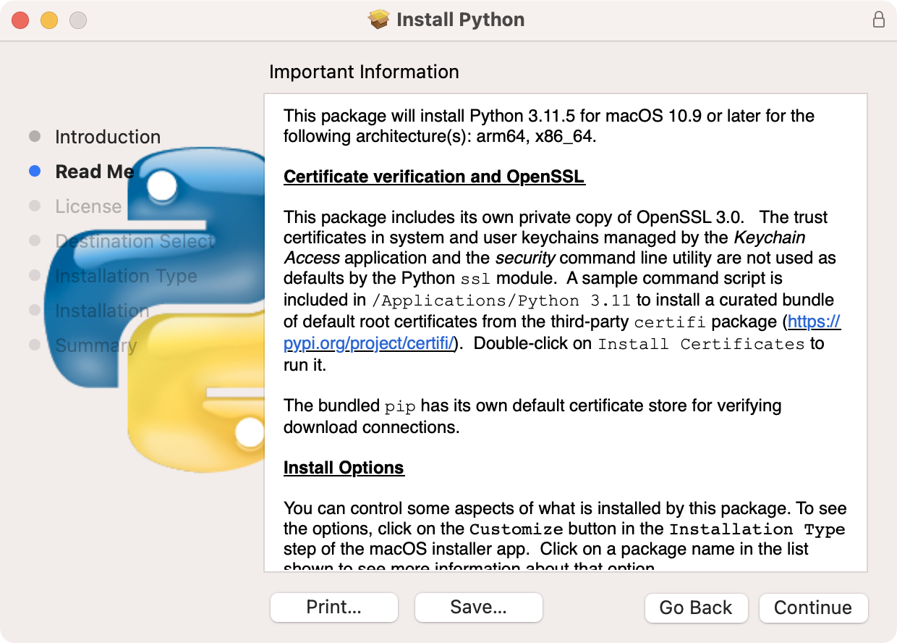
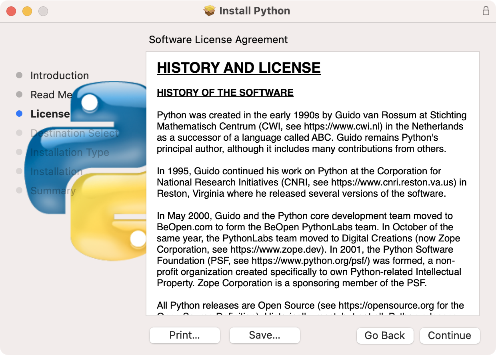
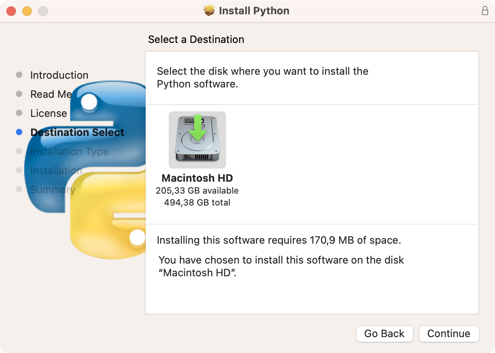
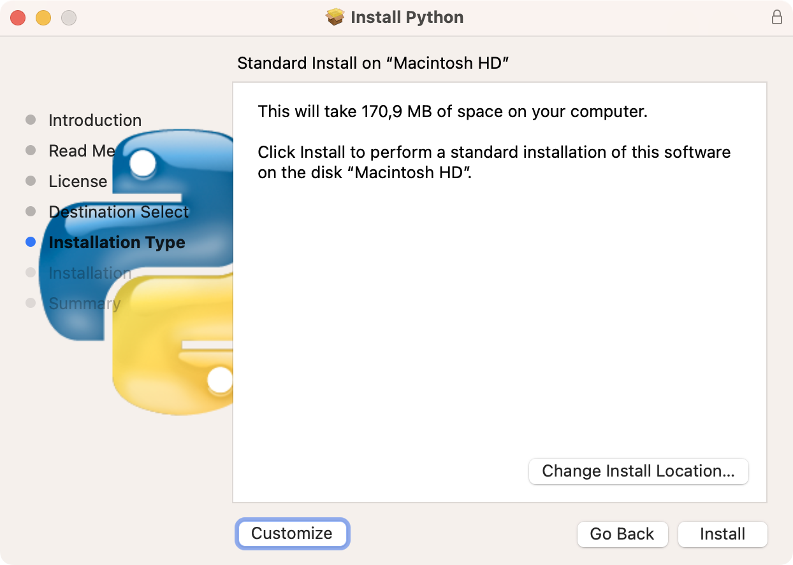
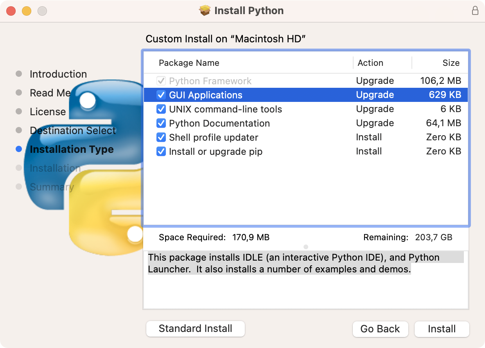
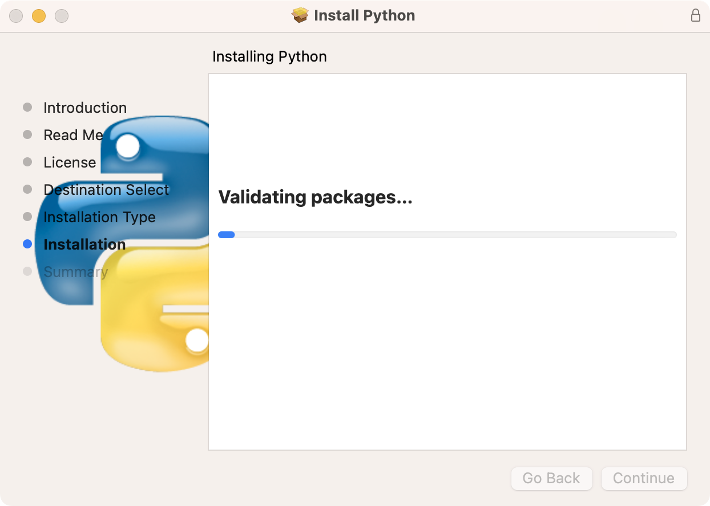
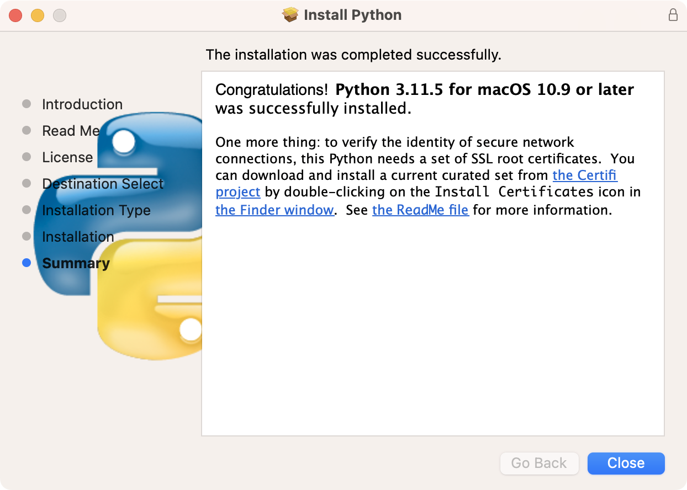

Instalar Python en tu computadora es el primer paso para aprender el lenguaje. Si tienes una computadora Mac, aquí aprenderás los pasos necesarios para instalar Python de manera rápida y confiable en el sistema operativo macOS.
Para instalar Python, emplearás el instalador oficial para macOS que puedes descargar desde Python.org. Es recomendable que tengas experiencia de trabajo en sistemas macOS para poder seguir esta guía de instalación de Python. Es especialmente importante tener conocimientos básicos sobre la terminal del sistema y cómo emplearla.
Prerequisitos
Para completar los pasos de esta guía de instalación de Python en macOS, necesitas una computadora con este sistema operativo. Además, requieres tener privilegios root y una conexión a Internet.
Lo demás es solo seguir las instrucciones más abajo!
Instalar Python en macOS usando el instalador oficial
La manera recomendada para instalar Python en una computadora Mac es emplear el instalador oficial que provee la Python Software Foundation (PSF) en el sitio web del lenguaje, Python.org. Los pasos para completar la instalación son los siguientes:
- Descargar el instalador de Python para macOS desde la página de descargas.
- Ejecutar el instalador y seguir las instrucciones en pantalla.
- Verificar que la instalación se completó con éxito.
- 🐍
A continuación encontrarás una explicación detallada de estos pasos. Presta especial atención al paso número dos. De él dependerá el éxito de la instalación.
Paso 1: Descargar el instalador de Python para macOS
Lo primero que debes hacer es descargar el instalador de Python para macOS desde el sitio oficial del lenguaje, Python.org, que luce de la manera siguiente:

Una vez en esta página, selecciona la opción Downloads. Generalmente, cuando seleccionas esta opción, el sitio reconoce tu sistema operativo actual y te lleva directamente a la página de descargas correspondiente.
Deberás ver la siguiente página en tu pantalla:

Una vez en la página de descargas, es recomendable que descargues la versión más reciente que aparecerá como la primera opción. De esta manera, tendrás acceso a las últimas novedades del lenguaje y estarás al día con las correcciones de errores y los parches de seguridad.
También puedes seleccionar una versión más antigua si lo deseas. Para esto, desplázate hacia abajo en la página de descargas e identifica la versión deseada.
En esta guía, emplearás el instalador universal (.pkg) de 64-bit para macOS 10.9 o superior. Este instalador provee la versión 3.11.5 de Python. Puedes descargarlo directamente haciendo click en el botón amarillo.
Luego de estas consideraciones, has click en la versión de tu preferencia para comenzar la descarga del instalador de Python. Una vez concluida la descarga, estás listo para el próximo paso.
Paso 2: Ejecutar el instalador de Python
Ejecuta el instalador de Python ya sea desde tu carpeta de descargas, desde tu navegador, o desde el dock de tu escritorio macOS. Al ejecutar el programa, aparecerá la ventana siguiente en tu pantalla:

Es la ventana inicial del instalador de Python. Sí, está en inglés, pero no hay de qué preocuparse. Tómalo como una práctica necesaria. Además, es probable que en tu ordenador te aparezca todo en español.
En esta pantalla, Python 3.11.5 te da la bienvenida a su instalador. Se trata de la versión diseñada para macOS 10.9 o superior.
Puedes hacer click en el botón Continue (Continuar) para proseguir con la instalación. Esta acción te lleva a la segunda ventana del instalador, Read Me, la cual luce de la manera siguiente:

En esta ventana, encontrarás información importante sobre la instalación. Puedes leer todo el contenido si lo deseas. Una vez que concluyas la lectura, haz click nuevamente en el botón Continue. Accederás a la tercera ventana del instalador:

Aquí encontrarás información sobre la licencia de software bajo la cual se distribuye Python. Nuevamente, puedes leerla si es un tema que te interesa. Para tu tranquilidad, la licencia de Python permite el uso del lenguaje tanto en aplicaciones de código abierto, como en proyectos comerciales.
Haz click en el botón Continue y acepta los términos de la licencia para proseguir. La siguiente ventana te permitirá seleccionar el disco de tu Mac donde deseas instalar Python. Si tu Mac tiene la configuración de discos por defecto, entonces el disco destino será Macintosh HD:

Con la configuración de discos por defecto, no tienes que realizar ningún paso adicional. Solo has click nuevamente en el botón Continue del instalador.
La próxima ventana te permitirá seleccionar el tipo de instalación. Aquí tienes dos opciones:
- Instalación estándar
- Instalación personalizada
La ventana de instalación estándar luce como se muestra a continuación:

Este tipo de instalación incluye todas las funcionalidades de Python para macOS. Por lo tanto, es la instalación recomendada si estás comenzando con Python.
Si deseas personalizar tu instalación, puedes seleccionar el botón Customize para acceder a la vista siguiente:

En esta ventana, puedes hacer click en cada una de las opciones para obtener información adicional. Por ejemplo, si pinchas la opción GUI Applications, obtendrás la siguiente vista:

Si no tienes pensado emplear IDLE en tu proceso de aprendizaje y desarrollo, entonces puedes desmarcar esta opción. El resto de las opciones son recomendables para evitar futuros problemas, así que no deberías desmarcarlas.
IDLE es el entorno de desarrollo integrado (IDE) por defecto de Python. Este programa provee una interfaz gráfica para trabajo con el lenguaje y su intérprete. Como regla general, está incluido en el instalador oficial en todas sus versiones.
Una vez que hayas personalizado tu instalación, puedes hacer click en el botón Install para comenzar. Deberás introducir tu nombre de usuario y tu contraseña. Ten en cuenta que debes tener privilegios administrativos para concluir la instalación.
El proceso de instalación comenzará:

La instalación no debe tomar mucho tiempo. En cualquier caso, puedes recostarte y relajarte mientra el instalador de Python hace su trabajo. Una vez concluido el proceso, recibirás un resumen de la instalación:

Esta ventana es la confirmación de que ha concluido la instalación de Python en tu sistema operativo macOS. Es importante que instales los certificados SSL para evitar problemas de conexión cuando emplees algunas de las herramientas de Python.
Para instalar los certificados, ve a la carpeta de aplicaciones de tu Mac, localiza la carpeta Python 3.11, has click derecho sobre el archivo Install Certificates.command y selecciona la opción Abrir con -> Terminal.app.
Paso 3: Verificar la instalación
Una vez que hayas ejecutados los pasos anteriores, Python estará instalado en tu sistema operativo. Para confirmar que lo tienes, abre una ventana de Terminal y ejecuta el comando siguiente:
$ python --version
Python 3.11.5
Este comando imprime la versión de Python que tienes instalada por defecto. Con esto has concluido la instalación de Python usando el instalador oficial para masOS. Ahora estás listo para escribir tu primer programa.
Resumiendo
Instalar Python en tu ordenador es el primer paso en tu empeño de aprender a programar con el lenguaje. Nuevamente, recuerda que los pasos a seguir para completar la instalación son los siguientes:
- Descargar el instalador de Python para macOS desde la página de descargas.
- Ejecutar el instalador y seguir las instrucciones en pantalla.
- Verificar que la instalación se completó con éxito.
- 🐍
Luego de completados estos pasos, estás listo para comenzar a explorar las bondades de Python como lenguaje de programación.